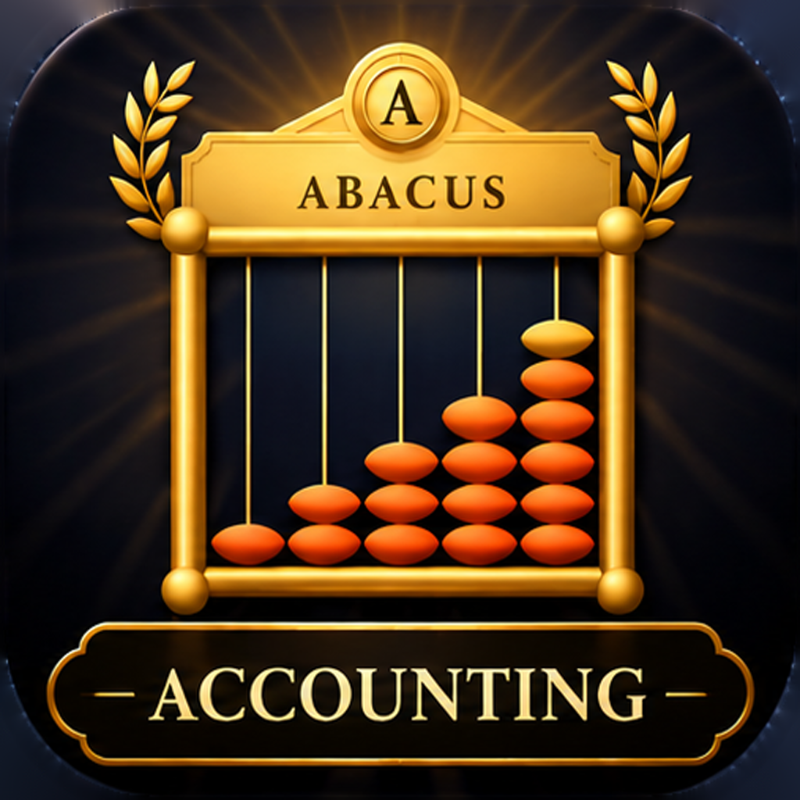

Profit Pocket Support
Email contact@rosterboard.net and we'll get back to you as soon as possible.
How do I record a sale?
Add a product first (something you sell), then tap + and choose Sale. The store's usual fee fills in automatically and is taken off, so your numbers show what you actually keep.
What's a project?
A project groups the things you make or sell, like "iOS Applications" or "Market stall". Costs that cover a whole project, such as a subscription, can be set to the project as a shared cost.
How do recurring costs work?
Add the amount, how often it's paid and the first payment date. Each payment is counted on its date up to today. Use Stop payments when you cancel it; past payments are kept.
Can I change the currency or financial year?
Yes, in Settings (the gear on the Overview screen).
How do I restore Premium on a new phone?
Settings → Restore purchases, signed in with the same Apple ID.
How do I delete my account?
Settings → Account → Delete account. This permanently removes your account and its data.